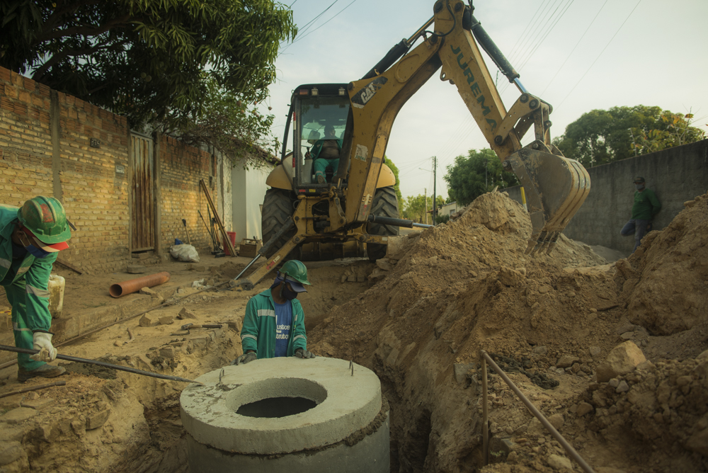
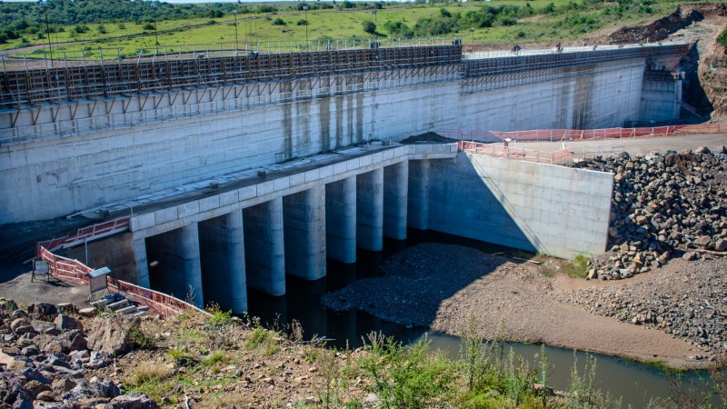
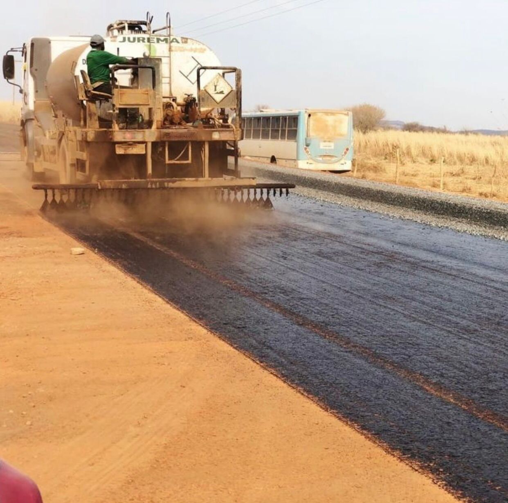

A topografia é o estudo da superfície terrestre e de suas
características e formas. O resultado desta área do conhecimento
é a descrição das superfícies, formas, coberturas vegetais e elevações, representada em mapas.

Saneamento
Saneamento básico é um conjunto de serviços fundamentais para o desenvolvimento
socioeconômicas de uma região tais como abastecimento de água, esgotamento sanitário, limpeza urbana, drenagem urbana,
manejos de resíduos sólidos e de águas pluviais.
Mobilidade
Mobilidade Urbana é definida como a condição que permite o deslocamento
das pessoas em uma cidade com o objetivo de desenvolver relações
sociais e econômicas. Ônibus, metrô, outros transportes coletivos
e carros fazem parte das soluções de mobilidade.

Barragem
Barragens são estruturas construídas em um curso permanente ou temporário,
basicamente utilizadas para contenção ou acumulação de água. Tais estruturas podem ser feitas de terra ou de concreto.

Pavimentação
A pavimentação asfáltica é o processo de revestimento de vias urbanas como ruas,
avenidas e rodovias com uma mistura de agregados e ligantes asfálticos. Por definição pavimento
é uma estrutura de múltiplas camadas de espessuras finitas, construída sob a superfície final de terraplanagem.